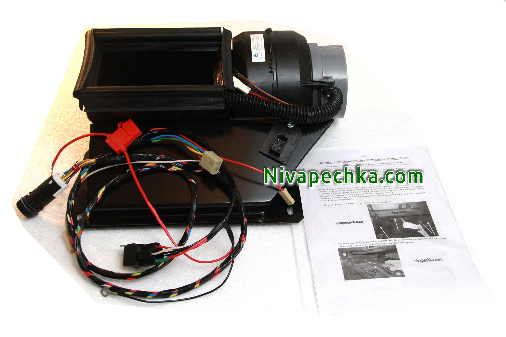

Установить вентилятор 2108 в Ниву своими руками и комплект МАКСИ КЛАССИК переключатель скорости КАЛИНА.
Обновлено:
Когда то каждый владелец Нивы задается вопросом что делать с вентилятором печки в Ниве? Следующий вопрос после поиска в интернете как установить венитилятор 2108 в Ниву и что для этого нужно. Мы предлагаем установить вентилятор 2108 в Ниву с помощью комплекта Нива-печка МАКСИ КЛАССИК переключатель на четыре скорости КАЛИНА. Проверенная временем и надежная конструкция позволяет сделать это даже в собственном гараже.

Мощный центробежный вентилятор 2108 в Ниве позволяет улучшить вентиляцию салона настолько, что вы зададитесь другим вопросом!!! Почему вы не сделали этого раньше?!
Теперь все проще. Выверенные размеры корпусов для установки вентилятора 2108 из любого комплекта Нива-печка гарантируют удобство и легкость монтажа, не
надо допиливать и дотачивать кузов Нивы, Капот закрывается без всяких дополнительных подгонок! Вам не нужно регулировать дополнительно замок капота из-за
установки вентилятора 2108 в Ниву. Наслаждайтесь теплой и тихой печкой в Ниве! Теперь это возможно!
Установить вентилятор 2108 в Ниву своими руками и комплект МАКСИ КЛАССИК переключатель скорости КАЛИНА